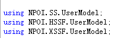

原文连接:https://www.cnblogs.com/lycb/p/10771766.html
什么是NPOI ?
简而言之，NPOI就是可以在没有Office的情况下对Word或Excel文档进行读写等操作。
使用方式 :
1、准备NPOI的dll文件
下载链接：https://npoi.codeplex.com/releases
2、将下载的dll文件引入项目中
3、引用命名空间

须知：
1、Excel表格分为：WorkBook（工作薄）-> Sheet（工作表） -> 行：Row 单元格：Cell。
2、NPOI是POI的C#版本，NPOI的行和列的index都是从0开始
3、POI读取Excel有两种格式一个是HSSF，另一个是XSSF。 HSSF和XSSF的区别如下：
HSSF is the POI Project's pure Java implementation of the Excel '97(-2007) file format.
XSSF is the POI Project's pure Java implementation of the Excel 2007 OOXML (.xlsx) file format.
即：HSSF适用2007以前的版本,XSSF适用2007版本及其以上的。
下面使用NPOI读取Excel例子：主要功能是将DataTable导入Excel，或将Excel读取到DataTable中。
代码如下：
1 /// <summary>
2 /// 将DataTable导入到Excel
3 /// </summary>
4 /// <param name="data">要导入的数据</param>
5 /// <param name="filepath">导入的文件路径（包含文件名称）</param>
6 /// <param name="sheename">要导入的表名</param>
7 /// <param name="iscolumwrite">是否写入列名</param>
8 /// <returns>导入Excel的行数</returns>
9 public int DataTableToExcel(DataTable data, string filepath, string sheename, bool iscolumwrite)
10 {
11 int i = 0;
12 int j = 0;
13 int count = 0;
14 ISheet sheet = null;
15 using (fs = new FileStream(filepath, FileMode.OpenOrCreate, FileAccess.ReadWrite))
16 {
17 //根据Excel不同版本实例不同工作铺
18 if (filepath.IndexOf(".xlsx") > 0) // 2007版本
19 {
20 workbook = new XSSFWorkbook();
21 }
22 else if (filepath.IndexOf(".xls") > 0) // 2003版本
23 workbook = new HSSFWorkbook();
24
25 try
26 {
27 if (workbook != null)
28 {
29 sheet = workbook.CreateSheet(sheename);
30 }
31 else
32 {
33 return -1;
34 }
35
36 if (iscolumwrite == true) //写入DataTable的列名
37 {
38 IRow row = sheet.CreateRow(0);
39 for (j = 0; j < data.Columns.Count; ++j)
40 {
41 row.CreateCell(j).SetCellValue(data.Columns[j].ColumnName);
42 }
43 count = 1;
44 }
45 else
46 {
47 count = 0;
48 }
49
50 for (i = 0; i < data.Rows.Count; ++i)
51 {
52 IRow row = sheet.CreateRow(count);
53 for (j = 0; j < data.Columns.Count; ++j)
54 {
55 row.CreateCell(j).SetCellValue(data.Rows[i][j].ToString());
56 }
57 count++;
58 }
59 workbook.Write(fs); //写入到excel
60 return count;
61 }
62 catch (Exception ex)
63 {
64 Console.WriteLine("Exception: " + ex.Message);
65 return -1;
66 }
67 finally { fs.Close(); fs.Dispose(); }
68 }
69 }
1 /// <summary>
2 /// 将Excel导入DataTable
3 /// </summary>
4 /// <param name="filepath">导入的文件路径（包括文件名）</param>
5 /// <param name="sheetname">工作表名称</param>
6 /// <param name="isFirstRowColumn">第一行是否是DataTable的列名</param>
7 /// <returns>DataTable</returns>
8 public DataTable ExcelToDataTable(string filepath, string sheetname, bool isFirstRowColumn)
9 {
10 ISheet sheet = null;//工作表
11 DataTable data = new DataTable();
12
13 var startrow = 0;
14 using (fs = new FileStream(filepath, FileMode.Open, FileAccess.Read))
15 {
16 try
17 {
18 if (filepath.IndexOf(".xlsx") > 0) // 2007版本
19 workbook = new XSSFWorkbook(fs);
20 else if (filepath.IndexOf(".xls") > 0) // 2003版本
21 workbook = new HSSFWorkbook(fs);
22 if (sheetname != null)
23 {
24 sheet = workbook.GetSheet(sheetname);
25 if (sheet == null) //如果没有找到指定的sheetName对应的sheet，则尝试获取第一个sheet
26 {
27 sheet = workbook.GetSheetAt(0);
28 }
29 }
30 else
31 {
32 sheet = workbook.GetSheetAt(0);
33 }
34 if (sheet != null)
35 {
36 IRow firstrow = sheet.GetRow(0);
37 int cellCount = firstrow.LastCellNum; //行最后一个cell的编号 即总的列数
38 if (isFirstRowColumn)
39 {
40 for (int i = firstrow.FirstCellNum; i < cellCount; i++)
41 {
42 ICell cell = firstrow.GetCell(i);
43 if (cell != null)
44 {
45 string cellvalue = cell.StringCellValue;
46 if (cellvalue != null)
47 {
48 DataColumn column = new DataColumn(cellvalue);
49 data.Columns.Add(column);
50 }
51 }
52 }
53 startrow = sheet.FirstRowNum + 1;
54 }
55 else
56 {
57 startrow = sheet.FirstRowNum;
58 }
59 //读数据行
60 int rowcount = sheet.LastRowNum;
61 for (int i = startrow; i < rowcount; i++)
62 {
63 IRow row = sheet.GetRow(i);
64 if (row == null)
65 {
66 continue; //没有数据的行默认是null
67 }
68 DataRow datarow = data.NewRow();//具有相同架构的行
69 for (int j = row.FirstCellNum; j < cellCount; j++)
70 {
71 if (row.GetCell(j) != null)
72 {
73 datarow[j] = row.GetCell(j).ToString();
74 }
75 }
76 data.Rows.Add(datarow);
77 }
78 }
79 return data;
80 }
81 catch (Exception ex)
82 {
83 Console.WriteLine("Exception: " + ex.Message);
84 return null;
85 }
86 finally { fs.Close(); fs.Dispose(); }
87 }
88 }
测试代码：


1 using System;
2 using System.Collections.Generic;
3 using System.Linq;
4 using System.Text;
5 using System.Data;
6
7 using NPOIHelperTool;
8 using Bll;
9 namespace ConsoleApplication1
10 {
11 class Program
12 {
13 static void Main(string[] args)
14 {
15 DataTable data = new DataTable();
16 for (int i = 0; i < 5; ++i)
17 {
18 data.Columns.Add("Columns_" + i.ToString(), typeof(string));
19 }
20
21 for (int i = 0; i < 10; ++i)
22 {
23 DataRow row = data.NewRow();
24 row["Columns_0"] = "item0_" + i.ToString();
25 row["Columns_1"] = "item1_" + i.ToString();
26 row["Columns_2"] = "item2_" + i.ToString();
27 row["Columns_3"] = "item3_" + i.ToString();
28 row["Columns_4"] = "item4_" + i.ToString();
29 data.Rows.Add(row);
30 }
31
32 ExcelHelper h = new ExcelHelper();
33 DataTable de = h.ExcelToDataTable(@"E:\Myuser.xls", "Sheet1", true);
34 int c = h.DataTableToExcel(data, @"E:\Test.xls", "sheet1", true);
35 IList<student> a = TypeUtil.ToList<student>(de);
36 }
37
38 }
39 class student
40 {
41 public string Id { get; set; }
42 public string Name { get; set; }
43 public string nc { get; set; }
44 }
45 }
参考：
https://www.cnblogs.com/Raning/p/5872822.html
https://blog.csdn.net/dcrmg/article/details/52356236
http://www.cnblogs.com/Erik_Xu/archive/2012/06/08/2541957.html
作者：遥远的Ta